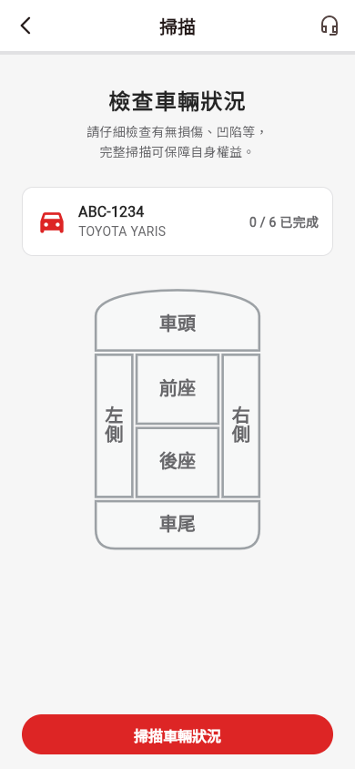
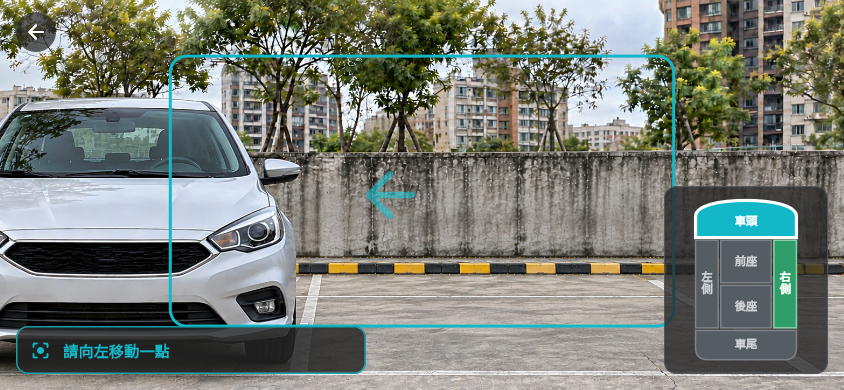
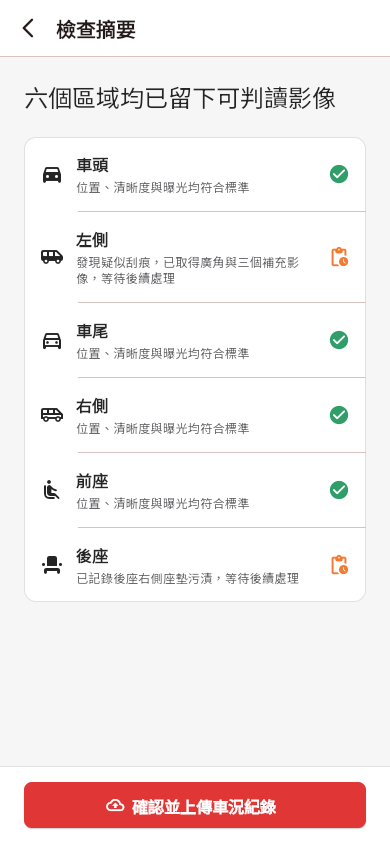
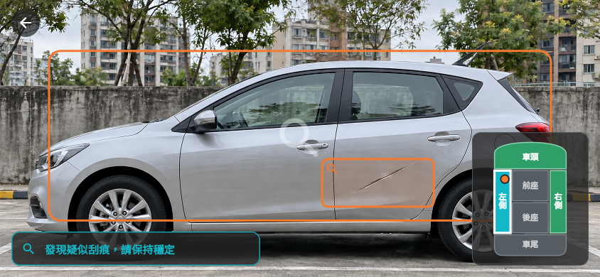
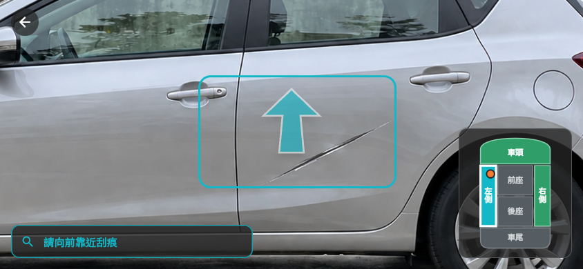
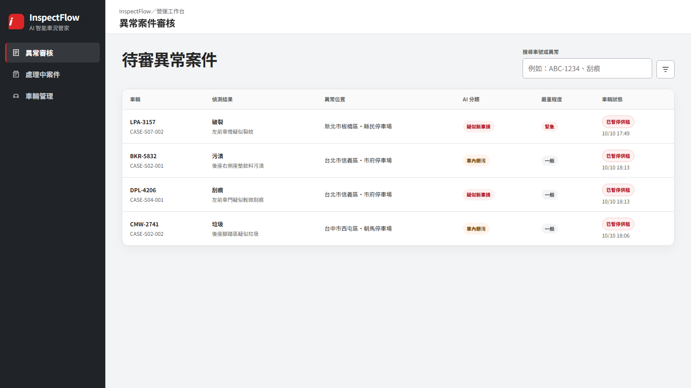
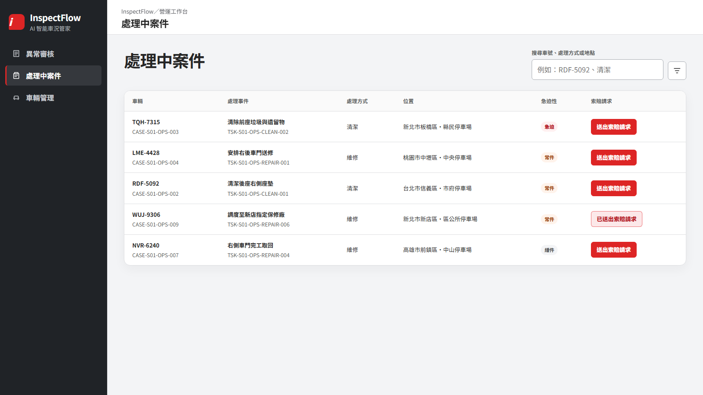
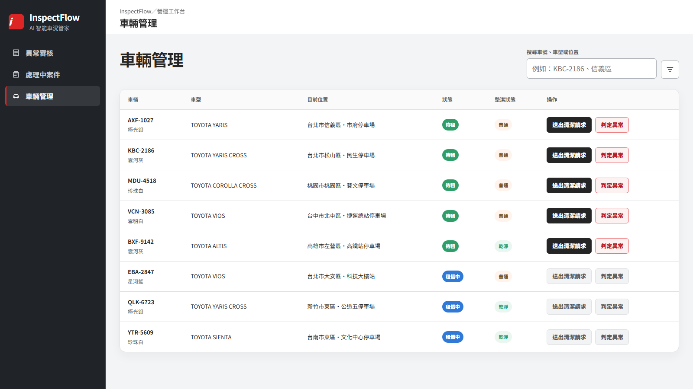
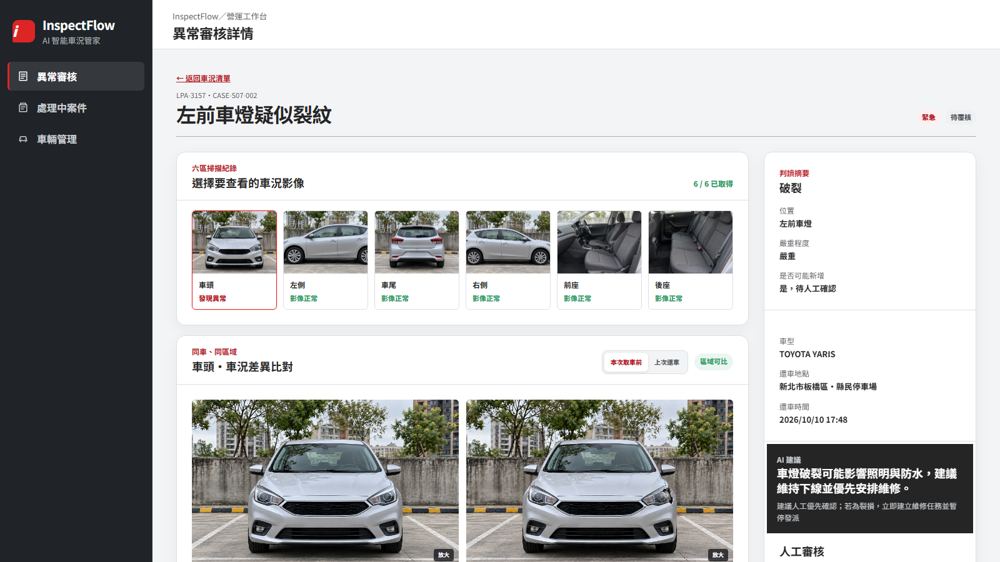

iRent 服務使用者
- 拍攝位置難以確認：使用者不確定目前角度與車身範圍是否符合判讀需求。
- 影像品質缺少回饋：問題常在上傳後才被發現，容易漏拍或需要重新補拍。
- 既有問題難以說清楚：接手車輛時如果已有髒污或車損，使用者很難用目前的照片證明不是自己造成的。
我們把 Be CARful 嵌入 iRent 原有取還車流程，將自由拍照改為引導式連續掃描。手機端先確保影像清楚、完整且可比較，雲端再整理前後差異與異常證據，讓人員只處理真正需要判斷的案件。
AI 逐幀檢查位置與品質，只保留符合條件的六區影像。
系統比較本次取車前與還車後影像，疑似異常不直接放行。
AI 自動處理高信心正常事件，讓車輛返回一般服務流程；人員集中審核例外並送出處理請求。
App 依畫面引導使用者完成六區掃描；只有疑似異常區域需要補充近距離影像。
雲端 AI 比對同車同區域的基準影像，找出前後差異並整理異常位置與可信程度。
客服與營運人員只查看待確認案件，再決定放行或送出清潔、維修、停用與索賠請求。
我們聚焦 iRent 服務使用者與後台客服、營運人員；兩端問題都源自取車與還車影像的角度、範圍及品質缺乏一致標準。
我們將流程收斂為三個階段：先取得合格影像，再由 AI 建立可比較的車況結果，最後只把例外案件交給營運人員。
我們保留使用者熟悉的 iRent 還車介面，按下「掃描車輛狀況」後直接進入橫向掃描；系統自動辨識區域、保存合格影像，完成後回到摘要與原有還車流程。

單一入口
六區皆由待掃描開始

橫向全畫面掃描，右下角同步顯示六區進度。

完成摘要
確認六區結果後上傳
我們將區域辨識、拍攝品質與自動擷取放在手機端執行；影像不合格時立即引導調整，疑似異常才增加近距離補掃，避免把反光或失焦送進後台成為假異常。
手機 AI 會持續辨識目前拍攝的車身區域。畫面偏離時，系統只顯示一個方向提示，讓使用者立即修正。
技術：用輕量影像模型辨識視角（MobileNetV3）
手機 AI 先在廣角影像中標出疑似刮痕或髒污。只有需要確認的區域，App 才要求使用者靠近補充影像。
技術：用物件偵測與影像分割標出異常範圍
App 先讓箭頭停留，使用者看清方向後再開始移動。到達適合距離時，系統直接擷取異常特寫。
技術：讓 AI 在手機上快速執行（TFLite／Core ML）
手機 AI 持續檢查每一幀的拍攝區域與影像品質。位置、距離或清晰度不合格時，App 立即提示調整；畫面穩定後才自動擷取。
技術：輕量影像辨識與即時影像處理（MobileNetV3、OpenCV）我們不重新建立人員分配、廠商或索賠覆核系統，而是在同一工作台完成例外確認與請求送出，再由 API 交給 iRent 既有流程承接。

異常審核頁只顯示等待確認的案件，並依急迫程度排序。營運人員點選整列即可查看影像證據與處理選項。

處理中案件頁追蹤已送出的清潔、維修或停用請求，也會同步顯示索賠請求是否已送出。

車輛管理頁只列正常車輛。營運人員可直接送出清潔請求，或將疑似異常送入待審核。

工作台把同區域的取車前、還車後與異常特寫放在一起，讓營運人員直接確認問題是否為本次新增。
雲端 AI 先找出同車同區域的基準影像並修正角度差，再標出異常位置、類型、嚴重度、信心與判讀限制。技術包含 DINOv2、LightGlue、影像分割與前後差異模型。
營運人員根據影像與 AI 限制決定放行，或選擇清潔、維修、停用，並視需要同步送出索賠請求。
我們把需要立即回應的判斷留在手機端，將跨租程比較與異常分析交給雲端。營運人員保留最後決策，iRent 既有系統則繼續管理後續處理。
接收資料App 取得訂單、車輛資訊與相機即時畫面。
執行工作手機 AI 逐幀辨識六區與影像品質，畫面穩定後保存最清楚的影格。
接收資料雲端取得本次掃描，以及同車同區域的取車前或可信歷史影像。
執行工作雲端 AI 先修正影像角度差，再辨識新增車損與整潔異常。
呈現資料工作台把前後影像、異常特寫、AI 信心與限制放在同一頁。
人工決策客服與營運人員確認是否放行，以及是否需要清潔、維修或停用。
接收請求既有系統接收 Be CARful 整理好的車況證據、處理方式與索賠請求。
承接作業iRent 原有流程繼續管理人員、廠商、進度與最終結果。
官方提供的 500 組真實使用者照片可支援早期資料盤點與模型研究。正式訓練前，我們仍須確認照片內容、建立一致標註，並將同一車輛的前後影像整理成可比較組合。
資料團隊人工確認每張照片的拍攝區域、品質問題、異常類型與實際位置，建立一致答案。
資料團隊以車輛或租程分開訓練、驗證與測試資料，避免同一台車的相似照片出現在不同資料組。
不同模型分別學習拍攝視角與品質、車身區域，以及取車前後的影像差異。
團隊比較 AI 與人工結果，確認準確度前不讓 AI 直接改變車輛狀態。
iRent 保留低信心與證據不足案件的人工確認，再依驗證結果逐步調整門檻。
系統將人工結論回存為新的驗證資料，資料與模型團隊再用它改善標註、模型與判讀門檻。
Be CARful 會保留來源影像、比較基準與人工決策。手機 AI 先選出合格影像，雲端 AI 再建立車況判讀結果；營運人員確認後，系統才產生 API 請求並接收外部處理狀態。
iRent 提供車號、取還車時間與地點。
手機 AI 只保存通過品質門檻的六區影像與必要特寫。
雲端取得同車同區域的取車前或可信歷史影像。
雲端 AI 記錄異常位置、類型、嚴重度、信心、影像來源與判讀限制。
營運人員確認放行或選擇處理與索賠請求。
既有系統回傳進度，更新案件與車輛紀錄。
Be CARful 不只辨識車損。我們先讓使用者取得可比較的影像，再建立前後差異、人工覆核與後續請求的完整流程，讓 AI 減少工作量，同時保留營運決策的人工控制。
手機 AI 在拍攝當下檢查位置與品質。反光、失焦或範圍不足的影格不會被保存，也不會進入後台形成假異常。
雲端 AI 優先使用同一租程的取車前影像；資料不足時，系統才補充可信的歷史紀錄。
Be CARful 自動處理高信心正常事件，讓車輛返回一般服務流程；只有疑似異常與低信心案件會進入人工覆核。
Be CARful 以 API 傳送證據與處理方式，iRent 既有系統繼續管理人員、廠商與索賠作業。
導入前，使用者自行判斷拍攝內容，後台人員再從大量角度不一的照片中搜尋與比較。導入後，App 先產生可比較影像，AI 自動處理正常事件、讓車輛返回一般服務流程，並整理例外證據供營運人員決策。
目前尚未取得 iRent 的現況基準與正式試點結果，因此我們不預設固定改善比例。導入時先建立基準，再比較使用者完成效率、影像可用性、AI 判讀品質與營運處理效率。
Be CARful 先提高車況影像品質，再用 AI 分流正常與例外事件。使用者可以完成較可靠的紀錄，後台人員則減少原本必須人工審核的正常事件，更早處理真正需要注意的車輛。
降低不知道怎麼拍、反覆重拍與漏拍的負擔，留下較完整的車況紀錄。
減少即時看片與搜尋歷史照片的工作，降低疲勞、遺漏與誤放風險。
更快隔離需要處理的車輛，也避免正常車輛因證據不足而長時間停用。
統一影像、判讀與請求格式，建立可追溯紀錄與後續模型改善基礎。
Be CARful 可先以獨立車況分析服務接入現有流程，不需要一次替換 iRent 既有系統。導入重點是取得可配對影像與人工覆核資料，確認 API 與權限規則，再逐步擴大自動化範圍。
資料團隊整理官方資料並建立標註規則，模型團隊先離線驗證影像品質與異常辨識能力。
iRent 選擇少量車型與區域試用，團隊比較 AI 與人工結果，但不讓 AI 直接改變車輛狀態。
iRent 保留人工確認，開發團隊串接處理請求與外部狀態回傳。
團隊依驗收結果增加支援車型與區域，再逐步擴大高信心正常事件的自動化範圍。
產品與服務設計、Flutter、雲端、後台與 API 整合。
模型開發、資料清理、標註、驗證與監控。
iRent 營運、法務、資安、個資治理與權限規則。